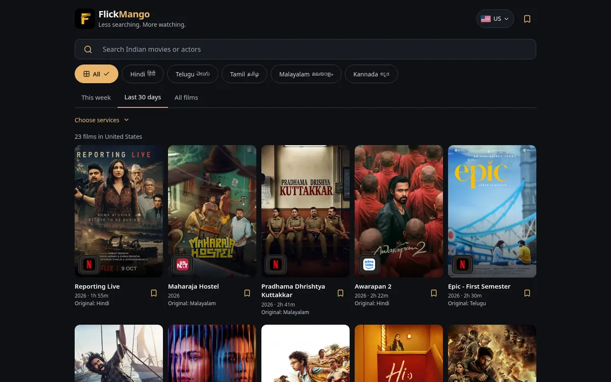

FlickMango
Less searching. More watching.

- Find
- Search by movie or actor, then filter by the services you choose.
- Languages
- Hindi, Telugu, Tamil, Malayalam and Kannada.
- Availability
- From JustWatch and Movie of the Night, credited on the site.
01 The problem
- Indian films are scattered across many streaming services, and the answer to “where can I watch this?” changes with your country.
- A few hundred titles can feel complete if the right ones are accurate; thin or wrong availability kills trust.
02 What I built
- A free site that lists Indian films by language, region and the services you already have, with no login wall.
- Quick views for This week, Last 30 days and All films, plus search by movie or actor.
- Each film shows its original language, so you know what you’re actually getting.
03 Key decisions
- Lead with language + region + “my services”, the job the big guides don’t center.
- Accuracy before size: verify a trusted set of recent hits before chasing a full archive.
- Label the original language on every film.
- Credit the availability sources openly in the footer.
04 What I'd change next
- Make availability more reliable and fresher, with deep links.
- Better search ranking and clearer handling of films that share a title across languages.
- Original vs. dubbed filters and a Friday “new releases” view.